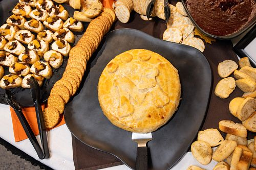
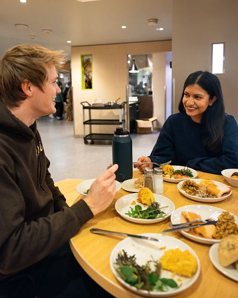

Food Pantry
WELCOME TO MAIZE & BLUE CUPBOARD
OUR MISSION
To ensure members of the University of Michigan community—whether on a tight budget or physically restrained from getting to a grocery store—receive equitable access to healthy, nutritious, and nourishing food and the ability to prepare it for themselves or others.

WHO WE ARE
College students and staff are experiencing food insecurity at alarming rates. The Maize and Blue Cupboard is here to provide an immediate and comprehensive response for the U-M community. By offering resources, educational opportunities, compassionate support and more, we help students develop the skills to make informed decisions.
What We Provide
Food
Kitchen and Cooking Supplies
Personal and Household Supplies
Support

Thanksgiving at UMSI